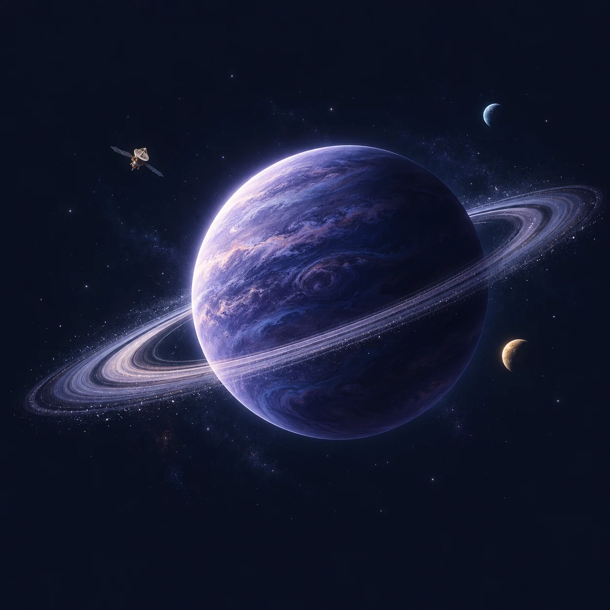

A PERSONAL JOURNEY THROUGH TECHNOLOGY
把每次探索，
连成自己的宇宙。
从第一行代码，到理解系统如何运转。
在这里，记录走过的路，也看见下一个想抵达的地方。
当前主线 软件与系统工程/ 并行探索 AI 模型机制

✦
探索没有终点ONE SMALL STEP, EVERY DAY.
THE CONSTELLATIONS / 知识版图
我的知识星图
七个知识星系，构成一张持续生长的地图。点击星体，留下你的探索记录。
UNIVERSE OVERVIEW
SEVEN FIELDS. ONE JOURNEY.
已涉足 正在攻占 未探索
拖动探索 / 点击星体查看档案探索航线 ✳
里程碑不是必修顺序，而是帮助你验证真实能力的导航坐标。
知识星体目录 ✳
将星图展开成可检索的技能清单，单击条目即可更新进度。
01 / 星系划分领域，不划分高低。
02 / 星体大小记录掌握，颜色记录状态。
03 / 航线连接知识，让理解不断生长。